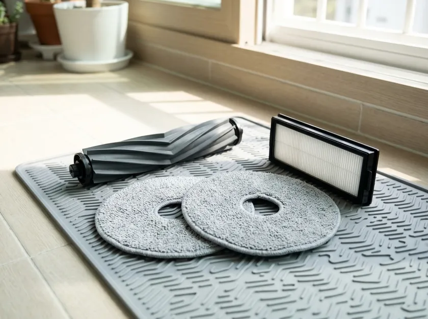
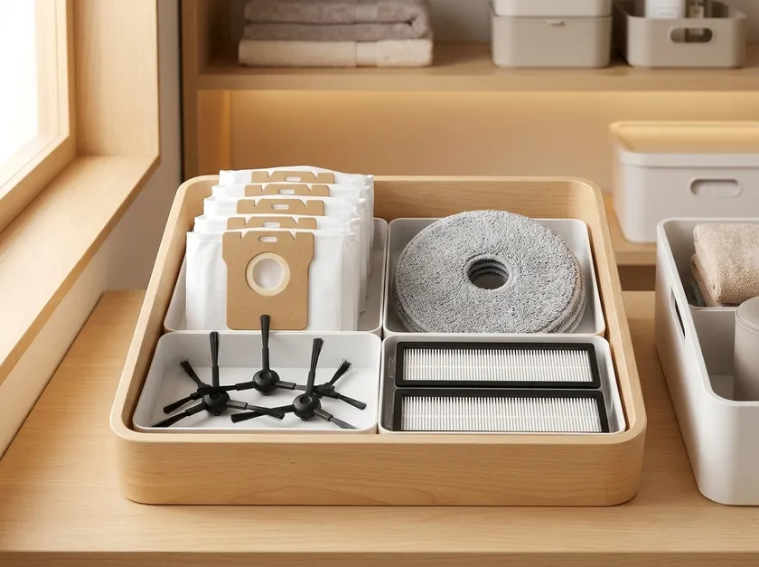
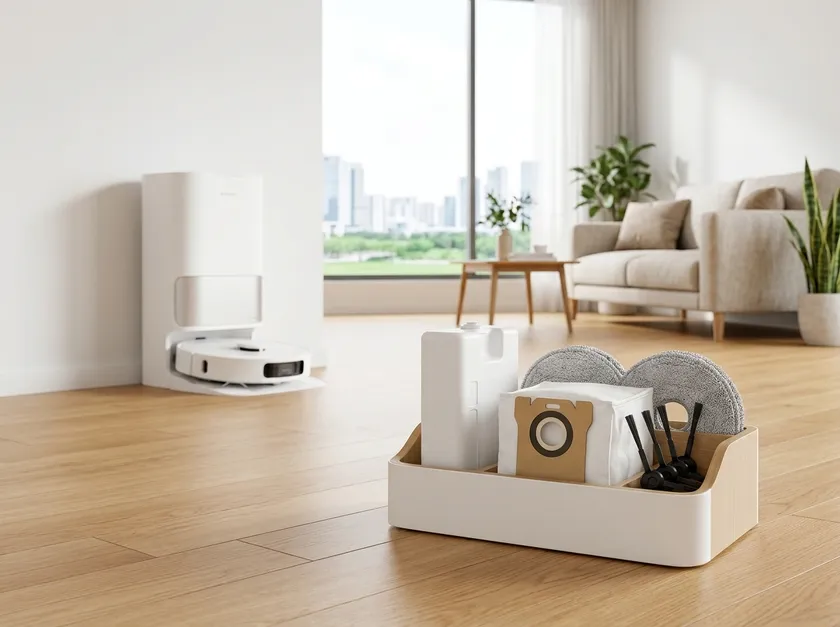
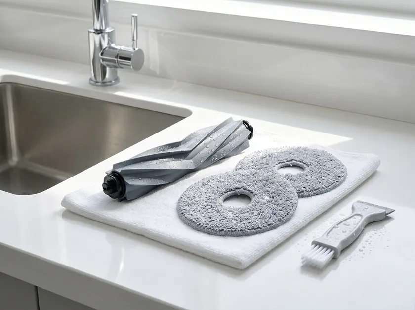

드리미 (Dreame)
드리미 L20 울트라 1년 세트 구성과 더스트백·카트리지 세제 점검법
글·구성: 제이상점 · 기종별 1:1 호환 실물 점검 · 교체 주기 비교표 · 스마트스토어 패키지 안내

핵심 관리 · 선택 체크포인트
- 드리미 L20 울트라와 X30 울트라는 세로로 긴 블랙 프레임 필터와 크라프트지 칼라 더스트백, 납작한 직사각형 카트리지 타입 클리너를 사용해 X40·X50 시리즈와 소모품 규격이 다릅니다.
- 베란다 매트와 싱크대 타월에서 브러시·물걸레 건조하기: 다용도실 싱크대에서 헹군 그레이 스파이럴 고무 메인브러시와 원형 물걸레 패드는 마른 타월로 물기를 한 번 닦은 뒤, 햇살이 드는 베란다
- 1년 패키지 구성품과 기종별 옵션 확인표: 세탁실 수납장 원목 정리함에 크라프트 칼라 더스트백과 3암 사이드브러시, 원형 물걸레, 블랙 프레임 필터를 칸별로 나누어 보관해 두면 교체 주기에 맞춰 바로 꺼내 쓸 수 있습니다.
- 거실 스테이션 옆 캐디에 카트리지 클리너와 여분 챙겨 두기: 거실 도크 옆 수납 캐디에 납작한 직사각형 클리너 카트리지와 크라프트 칼라 더스트백, 여분 물걸레·사이드브러시를 함께 담아 두면 스테이션 점검 동선이 훨씬 깔끔해집니다.
- 드리미 세제 확인법과 더스트백 점검 가이드도 함께 확인해 보세요: 드리미 세제를 준비할 때 모델별 타입을 확인하는 방법은 드리미 로봇청소기 세제 모델명·병 라벨 확인법에서, 더스트백 교체 시점을 살피는 요령은 더스트백 교체 알림과 실물 확인 순서에서 살펴보실 수 있습니다.
실물 부품 디테일 · 관리 구성 이미지




부품 규격 · 점검 기준표
| 확인 항목 | 부품·옵션 특징 | 점검·선택 포인트 |
|---|---|---|
| 메인·사이드 브러시 | 그레이 스파이럴 고무 메인브러시 / 3암 블랙 사이드브러시 | 고무 날개 세척 후 물기 건조 및 사이드브러시 모 점검 |
| 원형 물걸레·블랙 프레임 필터 | 그레이 원형 극세사 패드 / 긴 직사각형 블랙 프레임 필터 | X40용 차콜 필터와 모양이 다르므로 L20 전용 규격 확인 |
| 더스트백·카트리지 클리너 | 크라프트 카드보드 칼라 더스트백 / 직사각형 카트리지 클리너 | 상세페이지 선택 옵션에서 세트 구성 및 수량 확인 |
💡 교체 주기가 겹치는 필터·브러시·물걸레·더스트백은 단품 배송비를 여러 번 내기보다 드리미 L20 Ultra 기간별 세트(3개월·6개월·1년)로 미리 구비해 두면 물세척 후 24시간 교대 건조까지 끊김 없이 관리할 수 있습니다.
자주 묻는 질문 (FAQ)
Q. 드리미 L20 울트라 1년 세트 구성과의 메인·사이드 브러시 규격과 관리 기준은 무엇인가요?
A. 그레이 스파이럴 고무 메인브러시 / 3암 블랙 사이드브러시 규격을 사용하며, 고무 날개 세척 후 물기 건조 및 사이드브러시 모 점검 기준으로 점검·교체하면 청소 효율을 안정적으로 유지할 수 있습니다.
Q. 드리미 L20 울트라 1년 세트 구성과의 원형 물걸레·블랙 프레임 필터 규격과 관리 기준은 무엇인가요?
A. 그레이 원형 극세사 패드 / 긴 직사각형 블랙 프레임 필터 규격을 사용하며, X40용 차콜 필터와 모양이 다르므로 L20 전용 규격 확인 기준으로 점검·교체하면 청소 효율을 안정적으로 유지할 수 있습니다.
Q. 드리미 L20 울트라 1년 세트 구성과의 더스트백·카트리지 클리너 규격과 관리 기준은 무엇인가요?
A. 크라프트 카드보드 칼라 더스트백 / 직사각형 카트리지 클리너 규격을 사용하며, 상세페이지 선택 옵션에서 세트 구성 및 수량 확인 기준으로 점검·교체하면 청소 효율을 안정적으로 유지할 수 있습니다.
제이상점 1:1 검수 추천 패키지 · 구매 안내
메인 추천 구성
대표 구성 참고가 72,000원대 (옵션·쿠폰별 스마트스토어 결제 화면 기준)
1년 세트6개월 세트3개월 세트
☑️ 주문 전 확인해 두면 좋은 제이상점 안심 포인트
· 기종별 1:1 전용 규격 검수: 모델명·연식에 맞는 호환·정품 구성을 검수해 오주문 불안을 줄였습니다.
· 해외직배송 미리 주문 팁: 중국 구매대행·해외직배송 상품이므로 마지막 여분 1개를 꺼내 쓰는 시점에 개인통관고유부호와 함께 여유 있게 주문해 두시면 훨씬 경제적인 비용으로 끊김 없이 교체하실 수 있습니다.
· 기종별 1:1 전용 규격 검수: 모델명·연식에 맞는 호환·정품 구성을 검수해 오주문 불안을 줄였습니다.
· 해외직배송 미리 주문 팁: 중국 구매대행·해외직배송 상품이므로 마지막 여분 1개를 꺼내 쓰는 시점에 개인통관고유부호와 함께 여유 있게 주문해 두시면 훨씬 경제적인 비용으로 끊김 없이 교체하실 수 있습니다.
📖 더 많은 가정 내 사용 스토리와 상세 후기가 궁금하시다면
📱 네이버 블로그 모바일 원문 보기 ↗